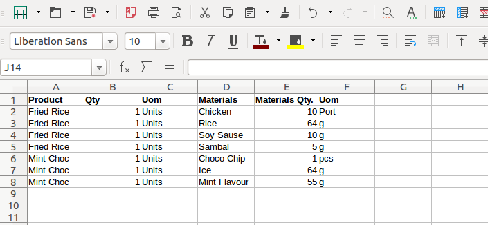

<section class="oe_container">
    <div class="oe_row oe_spaced">
        <h2 class="oe_slogan">Import BOM Data</h2>
        <h3 class="oe_slogan">Add a new menu item in the Manufacturing called Import BOM</h3>
        <center><h4>Bill of Material will be imported. if product are not found then it's also created. Please check below screenshot for BOM data file format.</h4>
        </center>
        <div class="oe_span12">
                                        
        </div>        
    </div>
</section>
